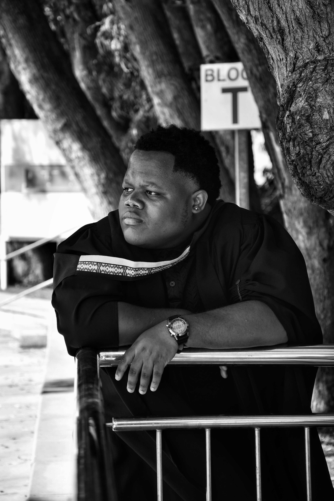

Who I am
About Me

My name is Lindokuhle Ndlala and I am a graduate of Nelson Mandela University. Between 2022 and 2025 I completed a Diploma in Information Technology: Software Development.
I am very self-motivated, and in any group work situation I always aspire to be a leader — that is my greatest strength when working with people. I believe a strong team starts with clear communication, shared accountability, and a willingness to lift others as you grow.
During my time at university I gained a solid understanding of programming languages such as C# and Python, along with web technologies including HTML, CSS, and JavaScript, as well as SQL for database interaction.
I am actively seeking an IT learnership or junior developer role in the Gauteng area. I thrive in environments where there is room to grow, contribute meaningfully, and be part of a team that solves real problems.